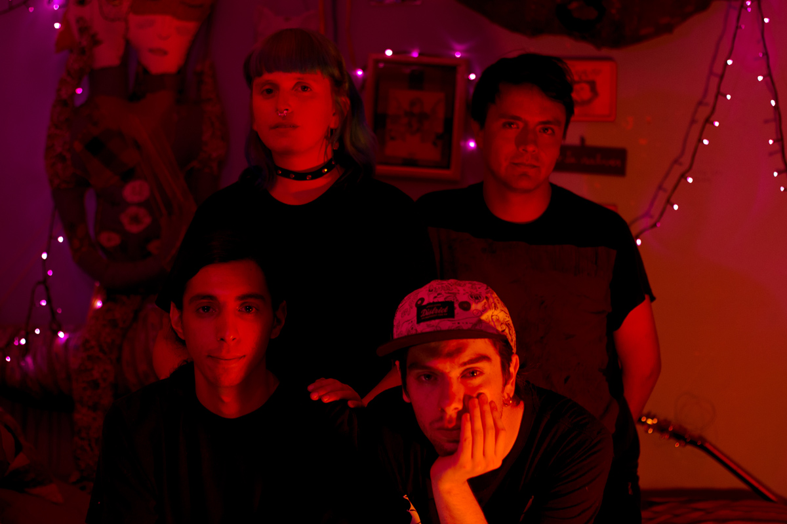

Piloto presenta: "Canciones para mis Amigxs", el primer EP de Las Olas
La producción es resultado de la colaboración entre la banda y miembros de Patio Solar, ECSDLQHP, Niños del Cerro y CFT y cuenta con una edición digital disponible para libre descarga en piloto.club, además de contar con una edición en cassette, que se agotó durante su lanzamiento en el show de Casa Volnitza.
Foto por Hisashi Tanida
Un parque ubicado en San Ramón llamado La Bandera unió a Camila, Simón, Luis y Javier en Las Olas, una banda que juntó las inquietudes que los cuatro muchachos tenían en común: pop con actitud punk en todas sus dimensiones posibles. Resultado de ello es "Canciones para mis Amigxs", el EP debut de Las Olas, que puedes descargar en la web de Piloto.
El conjunto originario del sector sur de Santiago se formó a inicios de 2015 y ha tenido una destacada participación en la escena musical que floreció el año pasado, codeándose con bandas como Patio Solar, Niños del Cerro, Paracaidistas, entre otros, destacando por sus shows explosivos. De estos encuentros nacen las colaboraciones que dan forma a "Canciones para mis Amigxs, como Simón Campusano de Niños del Cerro apoyando en guitarras y también siendo mezclado y grabado por Niños Muertos, colectivo que reúne a miembros de Patio Solar y ECSDLQHP.
"Canciones para mis Amigxs" habla de hacer las cosas por gusto, juntarse a crear entre amigos y para amigos, a través de la autogestión: trabajar con lo que esté a mano sin la ayuda de desconocidos. Las seis canciones que componen el EP, además, son una ventana hacia el imaginario de Las Olas, un lugar hecho para que otros escuchen sus canciones y se sumerjan en un mundo de ideas que buscan crear diálogos, reflexiones y compartir experiencias sobre la vida y la sociedad actual. "En ese sentido es un regalo para nuestros amigos y también un mensaje que contiene lo que pensamos y vivimos de la manera más honesta que podamos", agrega Luis, guitarrista de Las Olas.
El EP plasma estas ideas en un sonido que busca reivindicar el lo-fi, con influencias como las bandas de Sarah Records, Sonic Youth y referentes del hardcore punk local, en lo cual Luis especifica: "En el fondo, rescatamos la forma del hardcore mezclado con melodias pop y ejecución noise".
"Canciones para mis Amigxs" es un EP que fue lanzado oficialmente el sábado 5 de marzo en la noche en un show en Casa Volnitza, repitiendo la hazaña de presentaciones donde queda en evidencia la amistad y la autogestión. La masterización digital estuvo a cargo de Alex Rojas (responsable de "Temporada" de Patio Solar y "Nonato Coo" de Niños del Cerro). Además, la producción tiene una edición en cassette, siendo masterizado por Andrés Montero (Miembro del CFT) y del guitarrista de Las Olas, Luis. El objetivo tras el formato análogo es reforzar la baja definición del sonido y la experimentación, volviéndose el cassette un formato ideal para ello. La edición análoga se agotó en apenas un día, durante su presentación en vivo, pero habrá nuevas copias disponibles.
Puedes descargar "Canciones para mis Amigxs" en http://www.piloto.club, unirte a Piloto en sus redes sociales (Facebook: https://www.facebook.com/piloto.club/ Twitter: http://twitter.com/PilotoSCL) y también contactar a Las Olas en: https://www.facebook.com/lasolasnoispop/.
ADJUNTOS:
FOTO 1 LAS OLAS (Noispop)
FOTO 2 LAS OLAS (Noispop)
FOTO 2 PORTADA EP "Canciones para mis Amigxs"
REDES SOCIALES:
FACEBOOK LAS OLAS (Noispop)
FACEBOOK PILOTO
Fotos por Hisashi Tanida
PILOTO: Sitio Web Facebook Twitter Instagram Soundcloud Youtube
✈ comunicaciones@piloto.club ✈ contacto@piloto.club ✈